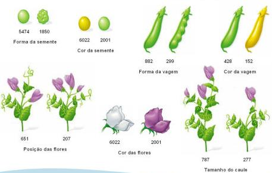

Os estudos realizados por Mendel, referidos anteriormente, foram realizados em ervilheiras, uma vez que estas plantas reuniam um conjunto de características que se enquadravam no trabalho que Mendel procurava desenvolver:
Mendel teve o cuidado de seguir linhas puras ou seja, selecionou apenas as plantas que, quando eram autopolinizadas, originavam descendência igual entre si e aos seus progenitores. Para isto, Mendel cruzava as ervilheiras que eram semelhantes numa dada característica e eliminava aquelas que surgiam com variações da característica que ele queria obter.
Com as plantas puras que obteve, Mendel cruzou a parte masculina de uma planta de semente amarela, com a parte feminina de outra planta de semente verde. A primeira geração resultante desse cruzamento (geração parental ou P) voltou a ser cruzada entre si, obtendo a geração F1, com todos os descendentes de sementes amarelas. Mendel chamou a esta, primeira geração híbrida, porque os indivíduos descendiam de pais com características diferentes (semente amarela e verde). Ele observou que na geração F1 existia sempre uma característica se sobressaía sobre a outra.
Após realizar a autofecundação de um dos indivíduos híbridos de semente amarela (geração F2 ou segunda geração híbrida), ele viu que 75% eram de sementes amarelas e que os 25% restantes eram de sementes verdes, na proporção de 3 sementes amarelas para 1 semente verde (3:1). Com isso ele concluiu que algumas características são dominantes sobre outras. Neste caso específico a característica das sementes de cor amarela era a dominante. Em experiências com outro tipo de características como a forma da semente, a cor da flor ou o tamanho da planta, ele chegou à conclusão que acontecia o mesmo que nos estudos anteriores, uma vez que uma das características acabava sempre por dominar na proporção de 3:1.
Dados os resultados que obteve, Mendel chegou à conclusão de que os filhos herdam características dos seus pais por meio dos genes. Quando ocorre a fecundação do óvulo pelo espermatozoide, há a formação do zigoto que carrega informações genéticas do pai e da mãe. Os filhos herdarão dos pais apenas 1 gene de cada característica, onde só ocorrerá a expressão da característica dominante, tal como acontece nas ervilheiras.
Este estudo levou à construção da Primeira Lei de Mendel que também ficou conhecida como lei de monoibridismo, uma vez que se aplica em indivíduos híbridos em relação apenas a uma característica.
Este tipo de cruzamentos, em que se pretende determinar qual o genótipo de um indivíduo que se manifesta dominante, cruzando-os com indivíduos homozigóticos recessivos, são chamados cruzamento-teste (por vezes, designados retrocruzamentos).
Após realizar vários testes de monoibridismo, Mendel resolveu fazer novas experiências, desta vez, com dois tipos de características diferentes em análise. Para isso, cruzou as sementes de ervilhas amarelas e lisas (dominante) com sementes de ervilhas verdes e rugosas (recessivo).
A geração F1 era composta apenas por sementes amarelas e lisas, o que já era esperado pois as sementes eram puras e com características dominantes. Por outro lado, na geração F2, foi observada a presença dos quatro tipos de características: 9/16 amarela lisa; 3/16 amarela rugosa; 3/16 verde lisa e 1/16 verde rugosa. A partir disso, Mendel concluiu que a herança da cor é independente do tipo de superfície da semente e vice-versa. Também se conclui que as sementes puras lisas e amarelas possuem genótipo A (amarelo) e L (liso), enquanto que as puras verdes e rugosas possuem genótipo a (verde) e l (rugoso).
A lei da segregação independente ou segunda lei de Mendel afirma que os alelos de dois (ou mais) genes diferentes são distribuídos para os gâmetas independentemente um do outro. Por outras palavras, o alelo que um gâmeta recebe para um gene não influencia o alelo recebido por outro gene. Desta forma, compreende-se que a genética mendeliana assenta em regras de probabilidades.
Estas regras são bastante simples. Considere-se um exemplo de um acontecimento A. A probabilidade deste acontecimento (P(A)) ocorrer varia entre 0 e 1, isto é, se ele ocorrer a probabilidade é de 1 e se ele não ocorrer, esta é de 0. o resto das situações diferentes destes extremos são expressas por valores obtidos da seguinte forma:
Um exemplo simples, para além daqueles que já foram dados acima, é o das chances de tirar coroa quando se atira uma moeda ao ar, onde existem 2 casos possíveis e um favorável, ou seja, a probabilidade de tirar coroa será de 50% ou de 1:2.
A Teoria Cromossômica da Hereditariedade de Boveri e Sutton afirma que os genes são encontrados em locais específicos nos cromossomas, e que o comportamento dos cromossomas durante a meiose pode explicar as leis de herança de Mendel. As propostas feitas por Mendel após as conclusões que ele retirou das suas experiências não levantaram, na época, quaisquer problemas éticos e eram tão simples que era difícil aceitá-las.
Apesar disso, os dois investigadores referidos anteriormente propuseram, de modo independente, que existia uma relação entre a segregação dos fatores de Mendel (Leis de Mendel) e a separação dos cromossomas homólogos durante a meiose. Esta conceção deu origem a um conjunto de investigações que acabaram por produzir resultados cuja interpretação é designada por Teoria Cromossómica da Hereditariedade, referida anteriormente.
Os princípios básicos do modelo de herança de Gregor Mendel mantiveram-se por mais de um século. Essas regras ainda são a base do nosso conhecimento sobre herança genética, contudo, hoje sabemos que existem exceções, extensões e variações que devem ser adicionadas ao modelo para que se possa explicar de forma completa os padrões de herança que vemos ao nosso redor. Algumas das variações/extensões nas regras de Mendel envolvem os genes únicos. Estas são:
Outras variações das regras de Mendel tratam das interações entre pares (ou, possivelmente, entre quantidades maiores) de genes. Muitas características são controladas por mais do que um gene, e quando dois genes afetam o mesmo processo, eles podem interagir entre si de formas diferentes, como por exemplo:
Em 1910, Thomas Morgan, embriologista da Universidade da Columbia, deu início a uma série de trabalhos de investigação que, viria alargar a teoria cromossómica da hereditariedade e a complementar/comprovar os estudos feitos por Mendel até então, apesar de Morgan ser cético às teorias e aos princípios de Mendel.
Ao estudar a hereditariedade nas moscas do vinagre(Drosophila melanogaster), Morgan reparou que a cor dos olhos estava associada ao sexo das moscas. Estas observações levaram ao conceito de ligação fatorial, descrevendo o processo como dois genes intimamente associados entre si num cromossoma são frequentemente transmitidos em conjunto.
Os genes dizem-se ligados fatorialmente ou em linkage quando se encontram num mesmo cromossoma e fisicamente próximos uns dos outros, muitas vezes sendo transmitidos em conjunto. A este conjunto de genes é atribuída a nomenclatura de grupo de ligação fatorial. Pelo contrário, genes mais distantes entre si têm menos probabilidade de ser herdados juntos e, terão maior probabilidade de serem separados durante a recombinação meiótica. Cada cromossoma tem uma série de genes dispostos em linha – genes ligados fatorialmente ou em Linkage como já foi referido, mas os genes presentes no mesmo cromossoma não se comportam como uma unidade indissociável, pois durante a meiose (prófase I), na formação de gâmetas, podem ocorrer fenómenos de crossing-over.
Nos seus estudos, Morgan analisou a transmissão de características como a cor do corpo e o tamanho das asas, através de cruzamentos entre indivíduos heterozigóticos, como se pode comprovar no esquema abaixo:
Morgan coloca, então, a hipótese que o alelo que determina a cor dos olhos da mosca-da-fruta se encontra no cromossoma X (hereditariedade ligada ao sexo - características cujos genes responsáveis pela sua manifestação se localizam num cromossoma sexual). O seguinte procedimento foi fazer o cruzamento reciproco, ou seja cruzar um macho de olhos vermelhos e uma fêmea de olhos brancos, e o resultado foi: 25% de fêmeas com olhos vermelhos; 25% de fêmeas com olhos brancos; 25 % de machos com olhos vermelhos e 25% de machos de olhos brancos. Ao interpretar os dados dos dois cruzamentos segundo a hipótese de Morgan (alelo que determina o cor está no cromossoma X) foi possível explicar os resultados obtidos. Assim, Morgan concluiu que os genes se encontravam nos cromossomas e alguns deles nos cromossomas sexuais.